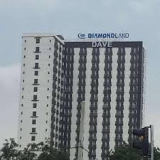

KUKEL (Kukusan Kelurahan)
Kukel adalah tempat yang berada di belakang Vokasi UI. Terdapat banyak tempat nongkrong dan jajanan di daerah sini, dam ramai ketika jam makan siang.
KYLAU

Kylau Common Space di Kukusan adalah ruang komunal yang memadukan kenyamanan dan hidangan enak dalam satu tempat. Pilihan tepat bagi siapa saja yang mencari tempat hangout seru dengan harga bersahabat.
letsgo yuk yumHOZ PASTA

Hoz Pasta di Kukusan adalah destinasi kuliner favorit mahasiswa yang menyajikan aneka pasta lezat dengan porsi memuaskan. Tempat yang pas untuk menikmati western food berkualitas tanpa harus merogoh kocek terlalu dalam.
letsgo yuk yumDave

Kukel adalah area di sekitar Fakultas Teknik UI yang terkenal dengan deretan tempat makan dan nongkrong mahasiswa teknik.
letsgo yuk yum